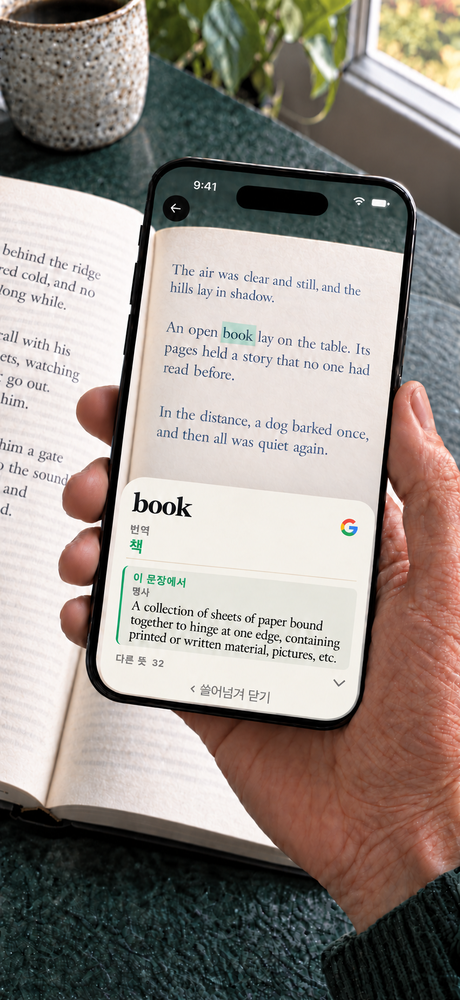

Booktionary · iPhone · Android
종이책을 위한 카메라 사전
모르는 단어 때문에 좋은 책의 흐름을 놓치지 마세요. 휴대전화 카메라를 단어에 비추고 뜻을 확인한 뒤 계속 읽으세요. 직접 입력할 필요가 없습니다.
iPhone · iOS 17+ / Android 8.0+ · $1.99 USD

Android
영어 사전이 기본으로 제공됩니다. 다른 사전과 단어 번역은 읽기 전에 다운로드하세요. 설치된 자료는 오프라인에서 사용할 수 있습니다. 계정은 필요하지 않습니다.
한 번 구매하면 제공되는 모든 사전과 단어 번역 팩이 포함됩니다. 구독이나 앱 내 구입이 없습니다.
영어 책을 위한 선택적 문맥 기능
Android 12 이상 및 RAM 8 GB 이상의 호환 휴대전화에서는 선택적 기기 내 모델이 영어 책에 맞는 사전 뜻을 고를 수 있습니다. 모델은 Google Play에서 별도로 내려받습니다. 활성화 전 기기 성능과 가용 자원을 확인하므로 최소 사양을 충족해도 사용이 보장되지는 않습니다. 뜻을 여는 시점에 결과가 준비된 경우에만 표시됩니다. 일반 사전 검색은 모델 없이도 사용할 수 있습니다.
카메라와 개인정보
카메라 이미지와 인식한 텍스트는 기기에서 처리됩니다. Google ML Kit는 기술 진단 및 사용 데이터를 수집합니다. 리소스 다운로드 시 일반적인 연결 정보가 호스트로 전송됩니다. Google 검색을 선택하면 검색어가 브라우저와 Google로 전송되며 인터넷 연결이 필요합니다. 자세한 내용은 Android 개인정보처리방침을 확인하세요.
Android 8.0 이상 및 카메라가 필요합니다.
이용 안내
책의 언어를 선택하고 단어를 비춘 채 잠시 기다리세요. 뜻풀이를 쓸어 넘기면 계속 읽을 수 있습니다. 사전과 단어 번역의 수록 범위는 단어와 언어마다 다르며 복잡한 활용형은 찾지 못할 수 있습니다. 언어 자료를 확인하고 다운로드할 때는 인터넷 연결이 필요합니다. 뜻풀이 속 단어를 길게 눌러 사전에서 찾거나 복사하거나 Google로 검색하세요. 확인한 뒤에는 원래 항목으로 돌아갈 수 있습니다. 스캔한 단어도 바로 Google로 검색할 수 있습니다.
iPhone · 한 번 다운로드하고 오프라인으로
영어 사전은 기본으로 제공됩니다. 다른 사전, 단어 번역, 뜻풀이 번역에 필요한 모델은 원하는 것만 다운로드하세요. 설치된 자료는 오프라인에서 사용할 수 있습니다. 계정은 필요하지 않습니다. Google 검색은 선택 사항이며 브라우저를 열고 인터넷 연결을 사용합니다. 이 동작을 선택할 때만 검색 텍스트가 Google로 전송됩니다. 카메라 영상은 iPhone에 남습니다.
한 번 구매하면 제공되는 모든 사전과 단어 번역 팩이 포함됩니다. 구독이나 앱 내 구입이 없습니다.
iPhone · 문장에 맞는 뜻 찾기
하나의 단어에도 여러 뜻이 있습니다. 지원되는 기기에서 Booktionary는 주변 문장을 활용해 적절한 사전 뜻풀이를 먼저 보여주도록 돕습니다. 다른 뜻도 살펴볼 수 있습니다.
iPhone · 영어 책을 더 편하게
영어 뜻풀이 옆에 한국어 단어 번역을 표시하세요. 뜻풀이 자체의 번역도 켤 수 있으며 영어와 한국어를 전환해 읽을 수 있습니다. 필요한 언어 모델을 미리 다운로드하세요.

24개 언어의 책을 위한 사전
한국어, 영어, 일본어, 중국어(간체 및 번체), 프랑스어, 독일어, 스페인어, 포르투갈어, 이탈리아어, 체코어, 덴마크어, 네덜란드어, 인도네시아어, 쿠르드어(쿠르만지, 라틴 문자), 말레이어(루미), 노르웨이어 보크몰, 폴란드어, 루마니아어, 러시아어, 스웨덴어, 태국어, 튀르키예어, 우크라이나어, 베트남어.
iPhone · 영어 단어는 위 목록의 다른 언어와 그리스어로 번역할 수 있습니다. 그리스어 책 스캔은 지원하지 않습니다. 쿠르드어는 라틴 문자 쿠르만지를 지원하며 소라니는 제외됩니다. 말레이어는 루미를 지원하며 자위는 제외됩니다. 영어를 제외한 지원되는 23개 책 언어의 단어를 영어로 번역하세요. 호환되는 번역 모델을 사용할 수 있는 언어에서는 정의의 영어 번역도 선택할 수 있습니다.
- English기본 제공
- Français다운로드
- Español다운로드
- Português다운로드
- Italiano다운로드
- Deutsch다운로드
- Dansk다운로드
- Nederlands다운로드
- Norsk (bokmål)다운로드
- Русский다운로드
- Svenska다운로드
- Polski다운로드
- Čeština다운로드
- 日本語다운로드
- ไทย다운로드
- Română다운로드
- Tiếng Việt다운로드
- Türkçe다운로드
- Bahasa Indonesia다운로드
- 中文 · 简体 / 繁體다운로드
- 한국어다운로드
- Українська다운로드
- Kurdî (Kurmancî)다운로드
- Bahasa Melayu다운로드
지원
읽으면서 빠르게 단어 찾기